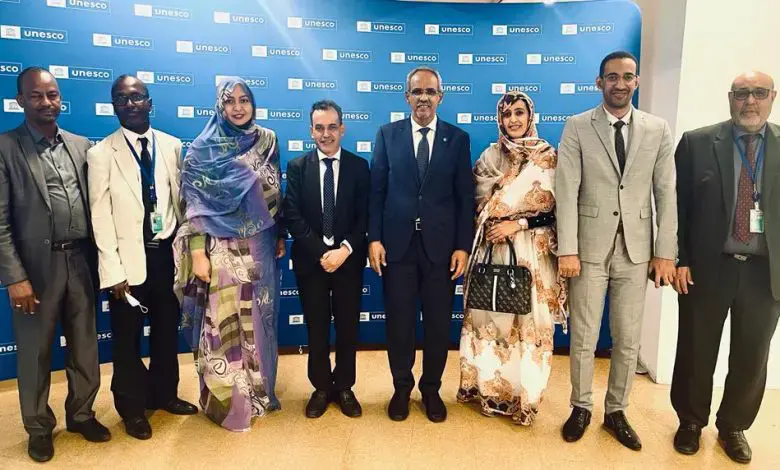

La Mauritanie élue membre de la commission internationale du patrimoine culturel immatériel

La Mauritanie a été élue mercredi membre de la commission gouvernementale internationale du patrimoine culturel immatériel de l’organisation des nations unies pour l’éducation, la science et la culture (UNESCO)
La Mauritanie a obtenu 82 voix sur 156 obtenant ainsi la seule place vacante pour le groupe arabe.
La candidature de la Mauritanie, qui a été présentée par son délégué permanent auprès de l’organisation, Cheikhna Moulaye Zeïne, a été fortement appuyée par le groupe africain, une grande partie du groupe arabe et celui de l’Europe mais aussi de l’Amérique latine et l’Asie sous la houlette de la Chine.
L’ambassadeur mauritanien auprès de l’UNESCO a dit que cette session a la responsabilité essentielle de réfléchir globalement aux mécanismes d’inclure cet accord et proposer des modifications demandées pour les orientations exécutives dans ce cadre.
Il a ajouté que la société mauritanienne, multiethnique et multiculturelle, est consciente de sa profonde appartenance arabo-africaine, et de son rapprochement historique et sa communication outre-Atlantique avec l’Europe, l’Amérique et l’Asie.
C’est pourquoi elle a sollicité sa nomination, pour la première fois depuis son adhésion à l’UNESCO à cette commission afin, de soutenir les objectifs du Comité international pour la préservation du patrimoine immatériel.
Il a réaffirmé que son pays travaillera avec toutes les parties concernées afin de provoquer un nouveau bond qualitatif dans ce domaine, à même de rende justice à l’héritage de tous les pays et peuples, en particulier l’Afrique et les petits États insulaires, et ceux en voie de développement.
Le comité international est chargé de protéger et préserver le patrimoine culturel immatériel dans des accords adoptés par les gouvernements mondiaux en 2002.
Cette commission est composée de 18 pays élus par les pays membres réunis en assemblée générale des nations unies.